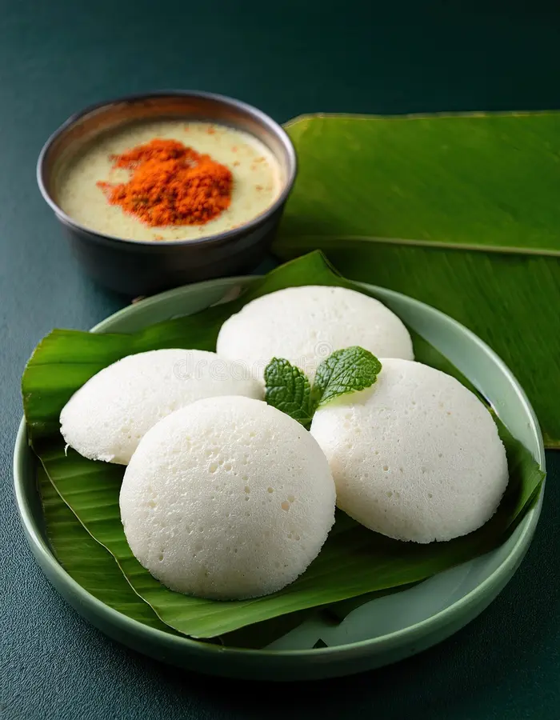

Home
Idli

simple and traditional South Indian idli recipe — soft, fluffy, and perfect for breakfast or a light meal
Ingredients
- 2 cups idli rice
- 1 cup urad dal
- 1 tsp fenugreek seeds
- Salt
- Water
Steps
- Soaking (at least 4-6 hours)
- Wash and soak idli rice and fenugreek seeds together.
- Wash and soak urad dal separately.
- Grinding (use a wet grinder or blender)
- First, grind urad dal into a smooth, fluffy batter. Add water gradually.
- Then grind rice + methi to a slightly coarse batter.
- Mix both batters together in a large bowl. Add soaked poha if using.
- Add salt (or wait till after fermentation, depending on climate).
- Fermentation (8–12 hours, depending on temperature)
- Cover and let the batter ferment in a warm place.
- The batter should double in volume and have a slightly sour aroma.
- Steaming Idlis
- Grease idli molds with oil or ghee.
- Pour the fermented batter into molds.
- Steam for 10–12 minutes on medium heat.
- Check with a toothpick — it should come out clean.